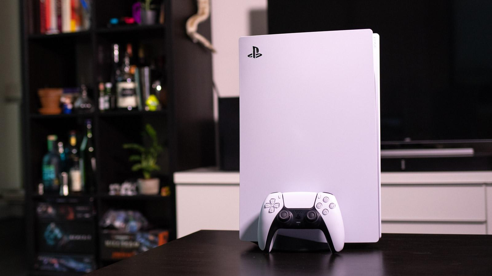
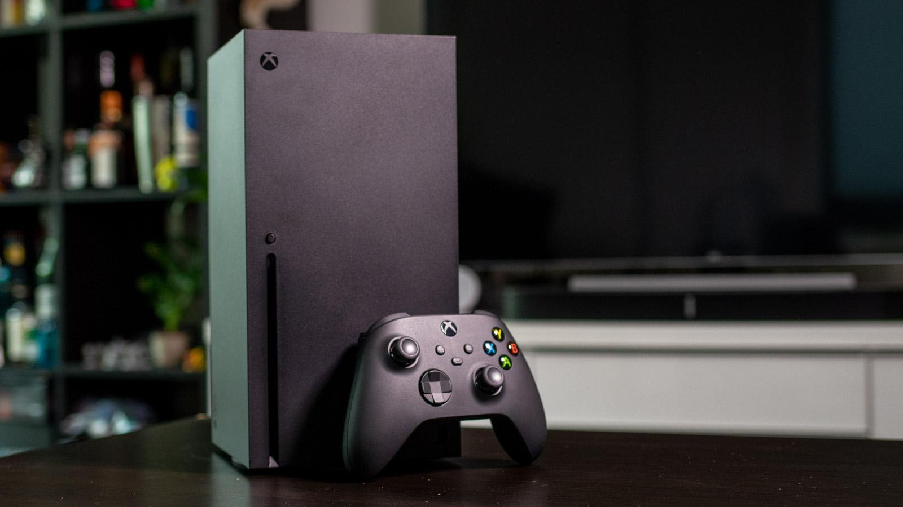
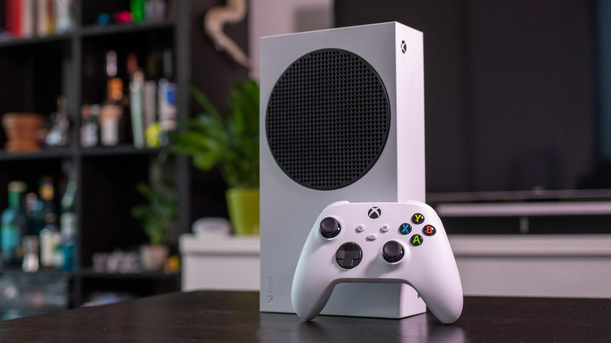
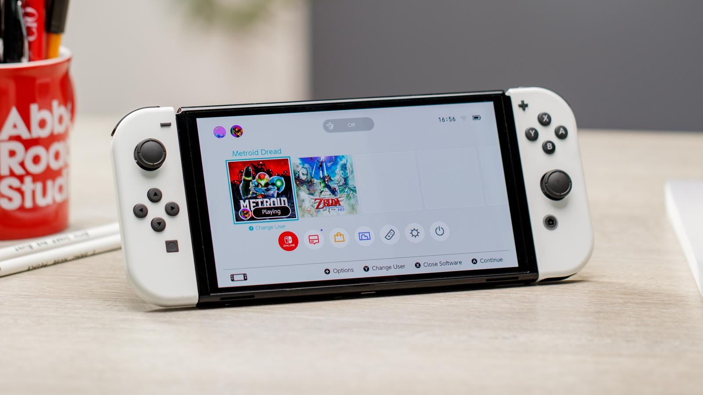
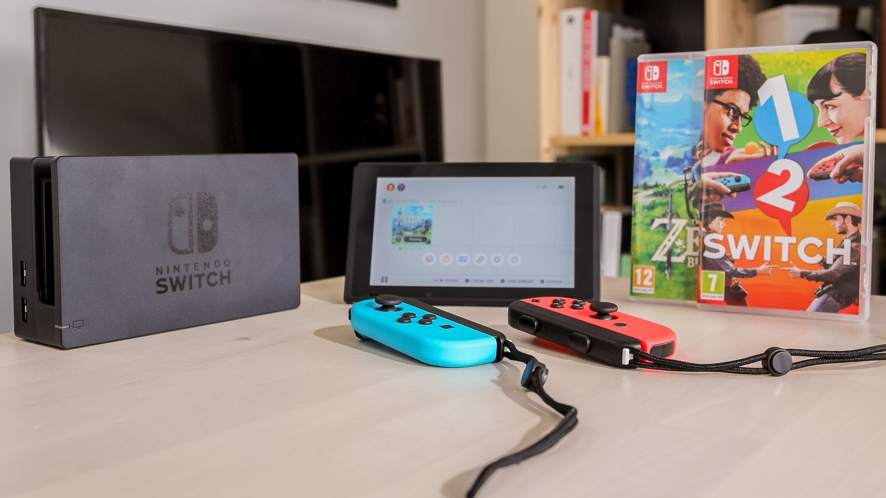

Play Station 5

- Pros
- Next-gen 4K@120fps performance
- Unmatched DualSense controller
- Extravagant design
- Cons
- Large dimensions
- Small internal SSD
The PlayStation 5 represents the pinnacle in new-gen gaming, offering
solid 4K@60fps (or even 120fps with a compatible TV) gameplay alongside
lightning-fast load times thanks to the inclusion of a custom-designed
SSD - although it is a little small at 825GB, and unlike the Xbox Series
X, it's pretty difficult (and pricey) to upgrade the internal storage.
Xbox Series X

- Pros
- Next-gen 4K@120fps
- Compact design
- Backwards compatibility
- Cons
- No changes to Xbox controller
- Slower loading times than PS5
The Xbox Series X is Microsoft's answer to new-gen gaming, offering the
same 4K@120fps performance with ray-tracing, high-quality textures and
improved particle effects as the PS5, and although not quite as fast as
Sony's bespoke SSD, the inclusion of an SSD means games are snappy too.
Xbox Series S

- Pros
- Cheaper than Xbox Series X
- Speedy SSD performance
- Great for access to Xbox Game Pass
- Cons
- Caps out at 1440p
- Can't run Xbox One X (or Series X) enhancements
The Xbox Series S doesn't offer the same high framerate 4K gameplay as
the Series X or PS5, but it does offer key upgrades including the speedy
SSD and the updated Xbox UI, and it's much cheaper than the hero
consoles too.
Nintendo Switch (OLED)

- Pros
- Large OLED display
- Slimmer bezels
- Better battery life than the original Switch
- Cons
- Expensive
- No boost in graphics power
The Nintendo Switch (OLED) doesn't offer a boost in graphical power like
some might've hoped, but as the name suggests, it does sport a larger
7in OLED display for an improved handheld gaming experience with more
vivid colours and deeper blacks. Zelda has never looked as good as it
does on the Switch OLED!
Nintendo Switch

- Pros
- Hybrid handheld/TV format
- Great Nintendo Switch titles
- Range of fun accessories
- Cons
- Dated design
- Middling battery life
- Lacks graphical grunt of other consoles
Nintendo's most popular console right now is predictably unusual. The
Switch is a sort of handheld/home console hybrid - you can connect it to
your TV to play on the big screen, or take it with you on the go as a
high-powered handheld, with various different control configurations for
each setup. While the design looks a little dated compared to the newer
Switch OLED model, the two handhelds offer the same game experience,
with no graphical enhancements from the upgraded model.